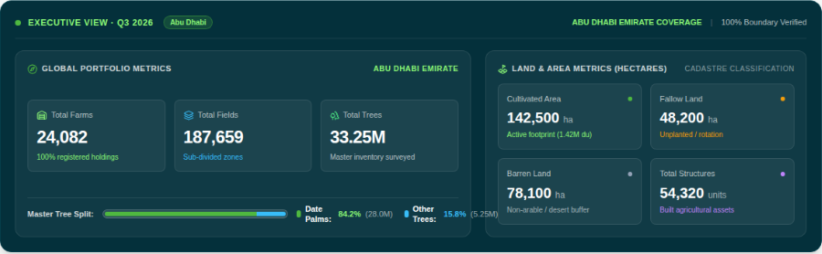
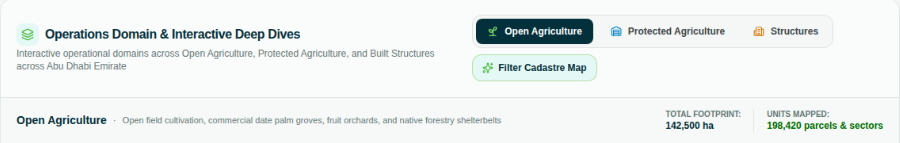

Reviewed 30 September 2026 by Romain Bigare, Director of Digital Systems
One
Giving the six modules a place in the menu
What we found
The side menu has 8 items. 3 items carry the main work, and 4 are support-related : Raise Ticket, Contact Us, Feedback, and Account and
Settings.
The 6 modules named in the contract are reached through cards on the Farm page. Modules have no page of their own, there is no place to show all of their
deliverables, and a new user cannot tell from the menu what the platform measures.
What we suggest
We would give each module its own entry in the menu, with a small group of pages under
it. The existing screens keep their place: the Executive View stays at the top, Farm
Monitoring becomes the page for one farm, and Reports stays the place for exports. The 4
support items can share one Support entry at the foot of the menu.
Current — 8 items
Sovereign Ops
Executive View
Farm
Farm Monitoring
Reports
Support & System
Raise Ticket
Contact Us
Feedback
Account and Settings
Suggested breakdown by the 6 modules
Executive View
What we have, and where
Crop Monitoring
Crops and area
Seasonal change
Fallow land
Tree Monitoring
Land Use & Structures
Irrigation Efficiency
Crop Water Calculator
Yield Optimisation
Farm Monitoring
One farm
Reports
Support · Account
Opening a module shows its pages. The existing screens keep their names.
What goes in each module
Each module needs 2 or 3 pages to hold its contract deliverables. As a starting point:
What each module measures and shows
Module
Pages
What is measured and shown
Crop Monitoring
Crops and area
Crop location and type. Cultivated area per farm and per crop, in dunums.
Seasonal change
New and abandoned cultivation against the same season last year.
Fallow land
Land ready for cultivation but not planted, per farm. Resting under or over 12 months.
Tree Monitoring
Tree count
Tree location and count. Species and variety: date palm cultivars, fruit, forest trees.
Canopy health
Canopy Health Index per farm, palms and fruit trees apart. Farms under stress.
Annual change
New plantings, removals and canopy loss against last year.
Land Use & Structures
Land use
Open and protected agriculture, structures and barren land, as area and share.
Structures
Count and footprint by type: housing, storage, animal enclosures, utilities.
Irrigation Efficiency
Scores
IER score and band per farm, province averages, farms above the subsidy line of 65.
Trend
Score by quarter. Farms that improved and farms that fell.
Crop Water Calculator
Monthly demand
Water demand per farm and per crop, in m³ per dunum. Farms more than 25% over demand.
Season budget
Water per crop over its growing season, and per kilo harvested.
Yield Optimisation
Yield forecast
Tonnes per dunum per farm and crop. Farms below the crop average. Production by province.
Crop calendar
When each crop is in the ground, month by month.
Two
Separating the levels of detail
What we found
The Farm page gathers a lot of useful content: land use, crop and tree shares, the 6
module cards, and a ranking of farms. It is about 5,400 pixels tall, or six screens of
scrolling, and it moves between the whole emirate, one farm picked from a menu, and a list
of 15 farms. A reader has to work out, block by block, which level each part is about.
The Farm page, top to bottom. Colour shows the level each block talks about.
Map of the emirate with layers
4 figures for the emirate
Water and yield for one farm, picked from a menu
Share bars: land use, crop type, trees
6 module cards, one number each
A detail table for the card that is open
15 farms ranked, as large cards
Emirate
Module One farm
What we suggest
We would keep the existing screens and give each one a single level of details. The Executive
View covers what we track and where. The module pages cover one topic across all
farms. Farm Monitoring covers one farm. The work is mostly moving blocks rather than building them, as most of the content can be accommodated in this revised structure.
Where each block of the Farm page goes
On the Farm page today
Moves to
Map, emirate figures, share bars
Executive View
6 module cards and their detail tables
The 6 module pages, one card each, grown into a page
Ranking by health, yield, IER and water
Each module's farm table, as sortable rows
Water and yield for one farm
Farm Monitoring
Nothing is dropped. Each block moves to the page that matches its level.
Three
A focused Executive View
What we found
The Executive View opens with the right numbers: how many farms
there are, and how much land is farmed or left fallow.
Around those numbers, the page holds a lot more: fields, trees, a tree split, barren
land, structures, a tree species table, a canopy health bar, three tabs and a map with its
own layer panel. All of it is useful, but we would suggest a reorganisation to improve the user experience.
Two small additional thoughts: the dark card at the top pulls the eye away from
everything below it, and the filtering tabs sit halfway down on the right, so when you switch tab,
the page moves and you lose your place.
The content is good but we would suggest rehoming it in one of the modules, where it can be the main subject.

The dark header card at the top of the page can pull attention.

The 3 tabs and a map button, halfway down the page on the right.
What we suggest
One idea is to give the Executive View one question to answer: what do we have, and
where? Four figures, one map that counts farms, and two short crop tables are enough for
that. Everything else moves to the module that owns it, where it gets more room than it has
today. The header card can take the same light style as the rest of the page, and then the
tabs are no longer needed.
The crop tables keep one useful habit: each row opens into its crops. This is called
drill down. You start with a big group, such as cereals, and go one step deeper to see the
crops inside it.
Stays on the Executive View
Farms
24,082
Area (du)
2.69M
Farmed (du)
1.43M
Crops now
18
4,2107,9409,1202,812
Farm counts in a neutral colour, splitting as you zoom.
Crops by area
du
▸ Cereals
124k
▸ Fodder
287k
▸ Open field
391k
▸ Date palm
802k
Crops by farms
farms
▸ Cereals
1,120
▸ Fodder
6,840
▸ Open field
3,415
▸ Date palm
19,760
Each row opens into its crops.
Finds a home in a module
TreesTree count, split and species table → Tree Monitoring
HealthCanopy health bar → Tree Monitoring
LandBarren land, protected agriculture, structures → Land Use & Structures
FieldsField count → Land Use & Structures
LayersFarm and field boundaries → the farm page
TabsReplaced by the module pages in the menu
HeaderLight, like every other card
Nothing is lost. Each block moves to the page where it is the main subject. Figures are for illustration.
Four
Letting the filters reach every page
What we found
The header has a region menu / filter, which we find is a great idea. We think it could be enhanced to include filters for crop and tree types.
If filters are controlled from the top, the data on the page can be more focused and relevant. Today,
share bars and tables always show every type at once.
As an example, today, it would be difficult to answer a question like :
how many farms grow tomatoes in Al Ain, and which ones?
The header today: a region menu, coverage labels, search and the language switch.
What we suggest
One idea is to build on the header you already have. Next to the region menu, a second
menu picks crop and tree types. It lists the groups in a fixed order (cereals, fodder, open
field, date palm, fruit trees, forest trees), and each group opens into its crops or
varieties. It can take the place of the coverage labels.
Both menus would then apply to the whole page. In practice, this means that when
someone picks Al Ain and tomatoes, every figure, chart, map and table on the page changes
together. There is no apply button. The choice is kept in the page link and stays when the
person moves to another page, so the chips on single lists are no longer needed. Summary
rows open into their parts, and every farm name opens the farm.
The same header, with a crop menu beside the region
Al Ain ▾Open field: Tomato ▾
Cereals · Fodder
Open field
Tomato
Cucumber
Date palm · Fruit · Forest
Search farms, cadastre, plots…EN | ARAccount
Every page now counts tomatoes in Al Ain, until the menus change again.
By placeEmirate→Province→Farm centre→Farm
By typeGroup→Crop or variety→Farms that grow it→Farm
3 clicks answer the tomato question, from any page.
Five
Adding trend data
What we found
Every number describes what is happening today, and the figures are clear and easy to read.
What is missing is the story over time. No figure says whether it went up or down since
last quarter or last year. There is no chart over time, and no list of the farms that
changed.
For our governmental clients, the trend is often the most important. The ADAFSA deliverables names a seasonal
change report, annual tree change and a quarterly irrigation trend, so this fits what is
already expected.
4 figures for a farm, with no sense of direction.
What we suggest
We think every module page could get a Change view, as a page or a tab. It has a chart over time,
the biggest movers, and the farms behind the movement, from oldest to newest. Crops,
irrigation and yield use 6 quarters. This is the shortest window that gives both a
last-quarter and a last-year reading. Trees and structures use 3 years, because they change
slowly. Change pages have no map. If there is not yet enough history, the page says so in
plain words.
A figure with its change, and a Change view
Cereals and fodder
4,110 dunums
▲ 6.1% vs a year ago
Switch: vs last quarter · vs last year
Cereals Fodder — dunums, 6 quarters
Biggest movers
Rhodes grass +210
Alfalfa +95
Barley −120
Sorghum −60
Farm
Province
12 months ago
3 months ago
Now
vs a year ago
Farm 0412
Al Ain
38 du
22 du
0 du
stopped
Farm 1873
Al Dhafra
12 du
20 du
31 du
+158%
The farm table runs oldest to newest, like the chart, and sorts to find who stopped or started. Figures are for illustration.
Six
Writing the farm page for an inspector
What we found
Farm Monitoring brings a lot together for one farm: health, yield, irrigation, water
and a field table. That is a good base. The page opens on satellite codes (S1, S2, S3),
cloud cover to two decimals, pass times to the second, and NDVI, NDWI and SAVI switches.
These help a specialist, but we wonder if an inspector who is preparing a visit would want simpler things at-a-glance:
what the farm grows, how it is doing, and what to check. Today these are hard to find in
plain words.
The farm cards also give instructions to the farmer, such as "Increase pivot delivery by
12% between 19:00 and 04:00". Watering times, soil salinity and weather belong in the
farmer's own app. The contract presents these modules without prescriptive irrigation
advice, so we think it is enough to tell the inspector what is currently happening.
The first thing a user reads about a farm: satellite passes and cloud cover.
What we suggest
One idea is to keep the page and change the order. It would open on a plain profile:
the 4 figures already there, what the farm grows, its trees, and what changed since last
quarter. A second tab lists what to check on a visit. These are neutral findings, with the
most important first, and a print button. The satellite strip, the indices and the field
table move to a third tab, Satellite detail, for the specialists who need them. Nothing is
lost. We just move it one level deeper.
Profile
What to check (3)
Satellite detail ▸
ActWater use 32% above crop demand this month
Most of the excess is on the citrus block. Check the meter and the watering times on the visit.
WatchIrrigation efficiency fell from 81 to 72 since last quarter
Now in the Acceptable band. Still above the subsidy line of 65.
Watch12 dunums fewer under cultivation than a year ago
Instead of: "Increase pivot delivery by 12% between 19:00 and 04:00."
Findings say what is true and what to look at. They do not tell the farmer how to water.
Seven
Aligning the scores with the contract
What we found
We think our scores must use one scale everywhere. If it does not, the same farm can get two
different verdicts. Today, irrigation efficiency is shown in 4 bands: Excellent, Good,
Moderate and Low, so a farm at 78 shows as Good. The deliverables for ADAFSA calls the same farm
Acceptable. Canopy health is an NDVI percentage. Water is flagged as overdraft as soon as
the balance goes below zero. The deliverables define all 3 differently.
"Canopy health (NDVI)" and one-word labels on the ranking cards.
What we suggest
We would want to define each score once and let every screen read
that one definition: the name, the band edges, the words and the colours.
Irrigation efficiency gets 5 bands: Excellent 90–100, Good 80–89, Acceptable 65–79, Poor
50–64 and Critical below 50. A line at 65 marks the subsidy, with a list of the farms on
each side. The Canopy Health Index gets one number per farm, worked out separately for
palms and for fruit trees. Over-allocation means a farm uses more than 25% above crop
demand. It is flagged each month and broken down by crop, to show where the water goes.
3 scores, defined once
Irrigation efficiency (IER, 0–100)
Critical
Poor
Acceptable
Good
Excellent
0
50
65 · subsidy line
80
90
Water use against crop demand, this month
Up to demand
Up to 25% over
Over-allocated
0%
100%
125% · flag
Canopy Health Index, per farm — palms and fruit trees apart
CHI = NDRE × 40% + EVI × 35% + NDWI × 25%
Each scale is kept in one place in the code. Every page, table and export reads it from there.
Eight
A calmer visual language
What we found
The product has a clear identity: the ADAFSA lockup, a bilingual name and a steady
green. On a single screen, though, we count green, teal,
blue, orange, yellow, purple and red, often with no meaning. The small caption under each
figure, for example, has its own colour. Dark teal headers sit next to white cards. Almost
every number is in a coloured pill, every section opens with an icon in a tinted square,
and many labels are capitals at 9 or 10 pixels.
Titles are relatively long and abstract, and some lines make claims that nothing on screen
supports. The result can feel a little overwhelming, the product
feels busier than it is.
A section title, and a status line in the menu.
What we suggest
One idea is a short set of rules that every screen follows. It would help getting a quiter design.
The rules are a starting point, and the second table shows how the long
titles could become plain names.
Page
White cards on light grey. One header style.
Colour
Grey text. One green for actions and selection.
Status
The 5-step ramp, only where something is judged.
Crop groups
One colour each, in a fixed order.
Type
One font. 12 px at least. Sentence case.
Pills
For a status only. Icons in the menu only.
Unit
Dunum everywhere. Hectares in the export.
Today
Suggested
Farm-Specific Water Demand & Sovereign Yield Telemetry
Water and yield
Farm Performance & Agronomic Ranking Intelligence
Farm ranking
Operations Domain & Interactive Deep Dives
Land use
Sovereign Agricultural Reports & Telemetry Audits
Reports
System Sync: Connected
Data as of 22 Sep 2026
100% Boundary Verified
remove
18,442 RPW Bio-Acoustic Sensors Active
remove
Name the thing plainly. Keep a claim on screen only if someone can explain it, and give it a date.
Bringing it together
Working from a common page frame
So far, each screen has been designed on its own, so each has its own layout, its own
boxes and its own colours. One idea is to place every page in a common page frame. The
frame is the set of parts that every page shares: a top bar, a menu on the left, a line that
says what you are looking at, and the same blocks for the content. This settles most of the
8 points above at once, and it makes each new page cheaper to build. Part of the frame
already exists: the header holds the region menu, the search box, the English and Arabic
switch and the account, and the Reports page is the natural home for exports.
Executive View
Crop Monitoring
Tree Monitoring
Land Use & Structures
Irrigation Efficiency
Crop Water Calculator
Yield Optimisation
Farm Monitoring
Reports
Support · Account
Al Ain ▾Cereals, Fodder ▾Search farms by name or IDEN | ARAccount
Al Ain · cereals and fodder · 1,284 farms · 4,110 dunums · data as of 22 Sep 2026, updated monthly
Crop Monitoring · Seasonal change
Area now
4,110 du
vs a year ago
▲ 6.1%
Farms
1,284
Crops
6
Chart or map the thing somebody came to look at
Table the same set, filtered together
The pages keep their content and gain a shared shape. Figures are for illustration.
The frame has 4 parts. The top bar holds what stays true everywhere: the region and the
crop menus side by side, one search box for farms, the language switch and the account. A
choice made there stays when somebody moves between pages.
The rail on the left holds the Executive View, the 6 modules, Farm Monitoring and
Reports, with Support at the foot, as described in point One.
A context line sits under the bar on every page. It repeats the selection and gives the
number of farms, the area and the date of the data, so somebody always knows what they are
looking at and how fresh it is.
The page itself follows the same 3 blocks every time: a strip of figures, a chart or a
map, and a table. Once those exist, a new module is a set of figures, one chart and one
table, rather than another page to design. Because the frame is one piece, it also turns
right-to-left for Arabic as one piece. We are happy to help with any of these points as you
go.